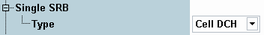

SRB Connection Settings
The "Single SRB" section configures "SRB only" connections.
For background information, see "Signaling Radio Bearer (SRB)".
This section is not relevant for reduced signaling.

SRB connection settings
Displays the radio resource control state to which the UE is commanded when an "SRB only" connection is set up (for RRC states see 3GPP TS 25.331). Option R&S CMW-KS410 allows you to select a state.
- CELL_DCH: In CELL_DCH state, the UE is allocated a dedicated traffic channel. This state is suitable for TX measurements.
- CELL_FACH: The type CELL_FACH requires call setup including alerting. It remains in the R&S CMW SW to keep the compatibility with the old test scripts. However some tests, for example, spurious emission tests as defined in 3GPP TS 34.121, require the CELL_FACH state where no dedicated traffic channel resource is allocated to the UE. For the CELL_FACH tests without established call, see "Type".